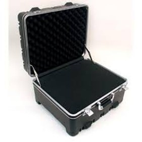
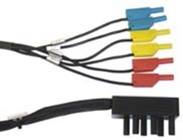
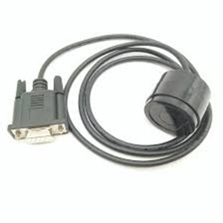
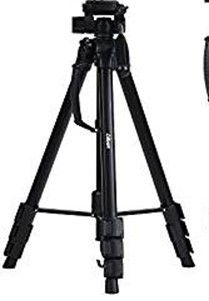
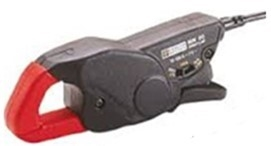
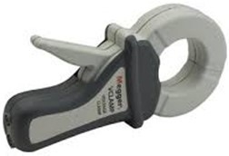
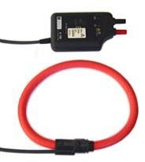
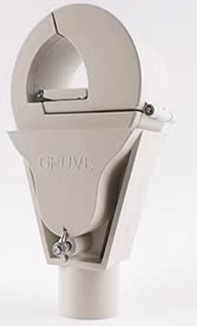
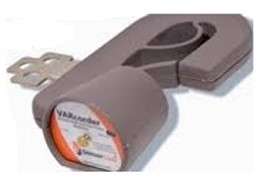

Siempre es más fácil conocer las normas ENEL-CODENSA
Rolex Rolex gold watch, compared with ordinary materials, gold watches are often expensive, but the replica rolex gold watch has the role of swiss replica watches hedging, so that it often becomes the first choice for collectors. The gold watch has value in the world, largely because the omega replica watch brand launched a commemorative limited edition watch or a replica hublot complex movement process or artistic attainments deep watches, mostly preferred gold precious metals such material. These watches tend to have a strong hedging function, therefore, Rolex Rolex gold watch reputation.

ET945 Equipos de medida patrón de MT
Datos adicionales
Número de especificación
ET945
Fecha de vigencia
22/01/2020
Herramientas adicionales
- Contenido Ocultar
- 1. OBJETO
- 2. CONDICIONES DE SERVICIO
- 3. SISTEMA DE UNIDADES
- 4. NORMAS DE FABRICACIÓN Y PRUEBAS
- 5. DETALLES CONSTRUCTIVOS
- 6. CARACTERÍSTICAS Y FUNCIONALIDADES
- 7. ACCESORIOS
- 7.1. MALETA
- 7.2. SET DE CABLES CONECTORES
- 7.3. CABEZAL FOTOSENSIBLE
- 7.4. SONDA ÓPTICA
- 7.5. TRÍPODE
- 7.6. PINZAS DE CORRIENTE PARA BT
- 7.7. PINZAS DE ALTA CORRIENTE EN BT
- 7.8. SENSOR FLEXIBLE DE ALTAS CORRIENTES EN BT
- 7.9. SENSOR DE CORRIENTE EN MT
- 7.10. SENSOR DE TENSIÓN EN MT
- 7.11. SOFTWARE DE CONTROL BAJO AMBIENTE WINDOWS
- 8. PLACA DE CARACTERÍSTICAS
- 9. ENSAYOS
- 9.1. PRUEBAS DE RECEPCIÓN
- 10. CRITERIOS DE ACEPTACIÓN O RECHAZO
- 10.1. MUESTREO
- 11. DOCUMENTACIÓN TÉCNICA A SUMINISTAR POR LOS PROVEEDORES.
- 12. GARANTÍA DE FÁBRICA
1. OBJETO
La presente especificación define los requerimientos técnicos y funcionales que deben reunir los equipos de medida patrón destinados para las pruebas a equipos de medida de energía usados en Enel Codensa.2. CONDICIONES DE SERVICIO
Los equipos de medida patrón deben ser aptos para funcionar en las condiciones y rangos de operación de los equipos de medida utilizados en Enel Codensa.Las condiciones eléctricas y ambientales a las cuales van a estar sometidos los equipos de medida patrón son las siguientes:
| CARACTERÍSTICAS ELÉCTRICAS | |
| tensión nominal sistema BT (V) | 208/120 – 440/254 – 480/277 |
| tensión nominal sistema MT (kV) | 11.4, 13.2 y 34.5 |
| Tensión máxima (kV) | 15 y 36 |
| Disposición del sistema | Tetrafilar (3 Fases + Neutro) |
| Frecuencia del sistema | 60 Hz |
| CARACTERÍSTICAS AMBIENTALES | |
| Altura sobre el nivel del mar | 2 640 m |
| Ambiente | Tropical |
| Humedad | Mayor al 90 % |
| Temperatura máxima y mínima | 40 ºC y - 5 ºC respectivamente. |
3. SISTEMA DE UNIDADES
En todos los documentos técnicos se deben expresar las cantidades numéricas en unidades del sistema Internacional (S.I.). Si se usan catálogos, folletos o planos, en sistemas diferentes de unidades, deben hacerse las conversiones respectivas.4. NORMAS DE FABRICACIÓN Y PRUEBAS
| NORMA | DESCRIPCIÓN |
| IEC 60736 – NTC 2423 | Equipos de prueba para medidores de energía eléctrica. |
| DIN EN 60529 | Niveles de protección contra ingreso de polvo y agua |
| DIN EN 61140 | Protección contra descargas eléctricas |
Pueden emplearse otras normas internacionalmente reconocidas equivalentes o superiores a las aquí señaladas, siempre y cuando se ajusten a lo solicitado en la presente especificación técnica. Las normas citadas en la presente especificación (o cualquier otra que llegare a ser aceptada por Enel Codensa) se refieren a su última revisión.
5. DETALLES CONSTRUCTIVOS
El equipo debe ser de tipo modular, con lo que se garantice una mayor flexibilidad para las diferentes necesidades de ensayo de equipos de medida de energía eléctrica.Se debe permitir ampliar la configuración, adicionando o cambiando módulos para tener diferentes niveles de rangos de medida en tensión y corriente, lo mismo que clase de exactitud.
La operación se debe poder realizar a través de teclado y pantalla LCD,
Las dimensiones máximas y peso de estos equipos son:
- Ancho: 500 mm
- Alto: 400 mm
- Profundo: 200 mm
- Peso: 10 kg, solo el equipo, sin los accesorios
6. CARACTERÍSTICAS Y FUNCIONALIDADES
Las mínimas características y funciones que debe poseer el equipo de medida patrón son las siguientes:- Medición de potencia y energía activa, reactiva y aparente
- Mediciones en los 4 Cuadrantes
- Pruebas a medidores de energía de la clase exactitud 2, 1, 0.5, 0.5S, 0.2, 0.2s, y de 1 fase 2 hilos, 2 fases 3 hilos y 3 fases 4 hilos
- Mediciones de tensiones con pértigas mínimo hasta 36 kV
- Medición de corriente mínimo hasta 2000 A en baja tensión y 100 A en Mediada tensión
- Medición de la frecuencia y factor de potencia
- Medición y representación de los armónicos mínimo hasta el número 40 y visualizarse en una tabla o en un diagrama de barras.
- Representación vectorial a color, vectores de corrientes y tensiones.
- Representación en forma de curvas
- Medida del Burden de transformadores de medida, de tensión y de corriente
- Medición de la relación de transformación de los transformadores de medida conectados a los medidores de energía, midiendo simultáneamente las corrientes primarias y secundarias utilizando como mínimo 6 canales de medida
- Prueba de la salida de impulsos de los medidores de energía. Comparación de la metrología y salida de impulsos del medidor e indicación del error porcentual entre estos dos valores.
- Tarjeta de memoria Compact-Flash extraíble para la exportación de los resultados y datos medidos
- Software de manejo de datos bajo ambiente Windows para la exportación e importación de resultados y datos medidos. También posibilidad de imprimir los resultados.
- Cálculos de los valores mínimos, promedios y máximos para las cantidades registradas, con informe en un formato preestablecido.
- Todos los valores medidos deben ser almacenados y asignados al cliente correspondiente, para su posterior edición.
7. ACCESORIOS
7.1. MALETA

Maleta con ruedas para el trasporte seguro del equipo patrón, junto con accesorios como Set de cables, Cabezal fotosensible, pinzas de corriente, etc.
7.2. SET DE CABLES CONECTORES

Cables de conexión rápida, de fácil conexión de las señales de tensiones y corrientes al circuito de medición.
7.3. CABEZAL FOTOSENSIBLE

Para detectar tanto las marcas en los discos de los medidores de energía electromecánicos como también las señales de los LED de los medidores electrónicos. Debe incluir dispositivo de sujeción que permita la fijación del cabezal justo en el punto deseado
7.4. SONDA ÓPTICA

Sonda para la comunicación entre el Equipo Patrón y el medidor de energía bajo ensayo.
7.5. TRÍPODE

Para el posicionamiento confortable y seguro del Equipo Patrón mientras se realizan mediciones en sitio.
7.6. PINZAS DE CORRIENTE PARA BT

Pinzas AC con error compensado para medir hasta 100 A, de tamaño pequeño que permitan la medición del error de medidores de energía eléctrica en sitio, diámetro de la mordaza entre 10 mm y 30 mm. Los datos de corrección para la compensación del error de la pinza deben ser almacenados en una memoria EPROM localizada en el conector de la pinza, permitiendo su calibración independientemente de la unidad básica. El certificado de calibración debe ser trazable a estándares internacionales.
7.7. PINZAS DE ALTA CORRIENTE EN BT

Pinzas AC que permita medir corrientes mínimas hasta 1.000 A. debe poseer mordazas con diámetro superior a 50 mm.
7.8. SENSOR FLEXIBLE DE ALTAS CORRIENTES EN BT

Este sensor flexible de corriente debe permitir la medición de corrientes de cualquier tipo de conductor con diámetros superiores a 50mm, y para magnitudes de corrientes de hasta 2.000 A.
7.9. SENSOR DE CORRIENTE EN MT

Sensor de corriente para rangos de corriente entre 0.5 a 100 A, y para tensión hasta 36 kV. Señal análoga de 1mV RMS/A, categoría de protección eléctrica IV, clase de exactitud 0.2S y grado de hermeticidad IP 65
7.10. SENSOR DE TENSIÓN EN MT

Sensor de tensión para tensión hasta 36 kV. Señal análoga de 100mV RMS/kV, categoría de protección eléctrica IV, clase de exactitud 0.2S y grado de hermeticidad IP 65.
7.11. SOFTWARE DE CONTROL BAJO AMBIENTE WINDOWS
El Software debe permitir el control del Equipo Patrón a través de un PC externo. También debe ser especializado para los diferentes ensayos de los equipos de medida y permitir la gestión de los datos de las pruebas, almacenamiento y generación de reportes e informes.8. PLACA DE CARACTERÍSTICAS
La placa de características deberá estar construida de acero inoxidable, no alterables por la acción de las partículas en la atmosfera y que puedan depositarse sobre el aparato. La información debe estar en color negro y el fondo de la placa en color claro para que sea fácil la visualización de la información. El tamaño mínimo de las letras y números debe ser de 3 mm.La información requerida es la siguiente:
- Marca
- Serie del equipo
- Modelo
- País de fabricación
- Año de fabricación
- Frecuencia nominal (Hz)
- tensión nominal (V)
- Corriente nominal (A)
- Tensión máxima (V)
- Corriente máxima (A)
- Norma de fabricación IEC o estándar equivalente
- Clase de exactitud (%)
- Número de fases
- Número de Hilos
- Peso (kg)
- Nombre del comercializador o logotipo
- Numero de Certificado de Producto (CIDET, ICONTEC, SIC, etc.)
- Marcación Enel Codensa
- Código de barras, mínimo 14 caracteres mínimo (Serie del equipo, marca, tipo, año de fabricación)
9. ENSAYOS
Todos los Equipos de Medida Patrón deben ser sometidos a una serie de pruebas destinadas a verificar si garantizan una seguridad de funcionamiento suficiente para resistir las diversas exigencias eléctricas, mecánicas o térmicas que pueden ocurrir en su lugar de utilización. Lo mismo que garantizar el cumplimiento de las funcionalidades de medida, funcionamiento y de comunicaciones.9.1. PRUEBAS DE RECEPCIÓN
Las inspecciones, pruebas y ensayos se realizarán según lo establecido en las Condiciones Contractuales para gestionar la Calidad de Componentes y Materiales DM-2016 Versión vigente.El responsable de Enel Codensa podrá inspeccionar en las instalaciones del proveedor o fabricante y de sus subcontratistas el proceso de fabricación y pruebas, y solicitar
La información y ensayos que a su juicio resulten necesarias para verificar el cumplimiento de los requisitos estipulados en este documento. El proveedor debe brindar plena colaboración al responsable en el cumplimiento de sus funciones.
El valor de las pruebas y ensayos debe incluirse en los precios cotizados en la propuesta. Enel Codensa se reserva el derecho de descartar las propuestas que no ofrezcan pruebas, o si las ofrecidas son consideradas insuficientes para garantizar la calidad.
Las pruebas de recepción corresponden a:
- Inspección visual y dimensional, incluye todos sus accesorios.
- Verificación de la marcación de placas de características.
- Ensayos de exactitud.
- Pruebas de funcionalidad del equipo con todos sus accesorios y software
10. CRITERIOS DE ACEPTACIÓN O RECHAZO
Se considera lote, la cantidad cargada en la plataforma de control de calidad de Materiales al momento de solicitar las pruebas de inspección técnica en fábrica.10.1. MUESTREO
El muestreo se realizará con base en los procedimientos y tablas estipuladas en la norma NTC-ISO 2859-1 “Procedimientos de muestreo para Inspección por Atributos. Parte 1: Planes de muestreo determinados por el nivel aceptable de calidad para inspección lote a lote”.Para el desarrollo de las pruebas es indispensable que los instrumentos involucrados estén calibrados.
10.2. ACEPTACIÓN O RECHAZO
Si el número de elementos defectuosos es menor o igual al correspondiente número de “Criterio de aceptación” indicado en las siguientes tablas, se considera que el lote cumple con los requisitos técnicos exigidos por Enel Codensa, pero en caso contrario, el lote se rechazará.
PLAN DE MUESTREO PARA INSPECCION VISUAL Y DIMENSIONAL (NIVEL DE INSPECCION I, NAC = 4%
| TAMAÑO DEL LOTE | TAMAÑO DE LA MUESTRA | CRITERIO DE ACEPTACION |
| 2 a 15 | 2 | 0 |
| 16 a 25 | 3 | 0 |
| 26 a 90 | 5 | 0 |
| 91 a 150 | 8 | 1 |
| 151 a 280 | 13 | 1 |
| 281 a 500 | 20 | 2 |
| 501 a 1200 | 32 | 3 |
| 1201 a 3200 | 50 | 5 |
| 3201 a 10000 | 80 | 7 |
| 10001 y mas | 125 | 10 |
PLAN DE MUESTREO PARA PRUEBAS ELÉCTRICAS(NIVEL DE INSPECCION S3, NAC = 4%)
| TAMAÑO DEL LOTE | TAMAÑO DE LA MUESTRA | CRITERIO DE ACEPTACION |
| 2 a 15 | 2 | 0 |
| 16 a 25 | 2 | 0 |
| 26 a 90 | 5 | 0 |
| 91 a 150 | 5 | 0 |
| 151 a 280 | 8 | 1 |
| 281 a 500 | 8 | 1 |
| 501 a 1200 | 13 | 1 |
| 1201 a 3200 | 13 | 1 |
| 3201 a 10000 | 20 | 2 |
| 10001 y mas | 20 | 2 |
Para efectuar cualquier despacho, es requisito indispensable una autorización escrita de Enel Codensa, la cual será expedida con base en los resultados de las pruebas realizadas en fábrica y/o la aprobación del protocolo de pruebas realizadas por el fabricante a los bienes solicitados.
11. DOCUMENTACIÓN TÉCNICA A SUMINISTAR POR LOS PROVEEDORES.
El oferente deberá presentar su oferta técnica con la siguiente información:- Relación de los bienes cotizados.
- Información del oferente.
- Planilla de datos técnicos garantizados: Se deben incluir todos los valores indicados en las planillas del anexo 1 en la columna “Características Ofrecidas” con todos y cada uno de los conceptos que figuran en este cuadro, reiterando o mejorando lo solicitado. Para cada alternativa, el oferente elaborará una planilla completa.
- Manuales, catálogos originales, completos y actualizados del fabricante, que correspondan a los elementos cotizados en la planilla de características técnicas garantizadas.
- Planos a escala con detalles de los equipos y las dimensiones indicadas en unidades métricas.
- Antecedentes de provisiones de equipos iguales o similares a los ofrecidos. Relación de clientes, evidencia de su capacidad técnica y experiencias relacionadas con los materiales cotizados.
- Carta de garantía de los bienes cotizados.
Enel Codensa podrá descartar ofertas que no cumplan con las anteriores disposiciones, sin expresión de causa ni obligación de compensación.
El proveedor presentará a Enel Codensa para su aprobación, un equipo de muestra de cada uno de los tipos ofertados, antes de iniciar la fabricación masiva, para que se verifique el cumplimiento de todo lo indicado en esta especificación y se dé el aval correspondiente”.
12. GARANTÍA DE FÁBRICA
Enel Codensa requiere como mínimo, un período de garantía de fábrica de cinco (5) años, a partir de la entrega de los bienes.ANEXO 1. PLANILLA DE DATOS TÉCNICOS
| ÍTEM | DESCRIPCION | UNIDAD | CARACTERISTICAS REQUERIDAS | CARACTERISTICAS OFRECIDAS | CUMPLE (SI/NO) |
| 1 | Características generales equipo patrón | ||||
| 1.1 | Marca | --- | Información Proveedor | ||
| 1.2 | Modelo | --- | Información Proveedor | ||
| 1.3 | Numero de elementos | --- | 3 | ||
| 1.4 | Número de hilos | --- | 4 | ||
| 1.5 | Tipo de medición | --- | Activa y Reactiva | ||
| 1.6 | Tipo de equipo | --- | Electrónico | ||
| 1.7 | Tipo de conexión | --- | Frontal inferior | ||
| 1.8 | Tipo de registro | --- | Valores actuales; Presentación Vectorial; Formas de Onda; Armónicos; Medición de Error; Medición Selectiva de Potencia; prueba de salida de pulsos; Prueba de Burden de Operación; Relación de Transformación de tcs y tps | ||
| 1.9 | Sentido de la medición | --- | Bidireccional | ||
| 1.10 | Grado d protección (DIN EN 60529 o equivalente) | --- | IP30 | ||
| 1.11 | Clase de aislamiento (DIN EN 61140 o equivalente) | --- | I | ||
| 1.12 | Muestreo mínimo | --- | 16 bit 500 muestras / Periodo | ||
| 1.13 | Puertos de comunicaciones | --- | USB o RS232 | ||
| 1.14 | Modo de osciloscopio para la presentación de las formas de onda, tanto en tiempo real como para el análisis de la forma de onda almacenada. | --- | Requerido | ||
| 1.15 | Diagrama fasorial | --- | Requerido | ||
| 1.16 | Análisis de armónicos | --- | Mínimo hasta el armónico 40 | ||
| 1.17 | Análisis estadísticos | --- | Mediante Software | ||
| 1.18 | Oscilaciones luminosas (flicker) | --- | Requerido | ||
| 1.19 | Alimentación a través de la tensión de prueba. | --- | Requerido | ||
| 1.20 | Tensión de alimentación | V | 100 a 277 V, Fase - neutro | ||
| 1.21 | Clase de exactitud energía activa | % | 0,02 | ||
| 1.22 | Clase de exactitud energía reactiva | % | 0,02 | ||
| 1.23 | Frecuencia nominal | Hz | 60 | ||
| 1.24 | Consumo | VA | Menor o igual a 60 | ||
| 1.25 | Rango temperatura de operación | oC | -10 a 50 | ||
| 1.26 | Humedad relativa no condensada | % | 95 | ||
| 2 | Funcionalidades | ||||
| 2.1 | Medición de potencia | W, VAR y VA | Requerido | ||
| 2.2 | Medición de energía | kWh, kvarh y kVAh) | Requerido | ||
| 2.3 | Pruebas a medidores de energía | --- | De la clase de exactitud 2, 1, 0.5, 0.5S, 0.2, 0.2s, y de 1 fase 2 hilos, 2 fases 3 hilos y 3 fases 4 hilos | ||
| 2.4 | Mediciones de tensiones con pértigas mínimo hasta 36 kV | --- | Requerido | ||
| 2.5 | Medición de corriente mínimo hasta 2000 A en Baja tensión y 100 A en Mediada tensión | --- | Requerido | ||
| 2.6 | Medición de la frecuencia y factor de potencia | --- | Requerido | ||
| ÍTEM | DESCRIPCION | UNIDAD | CARACTERISTICAS REQUERIDAS | CARACTERISTICAS OFRECIDAS | CUMPLE (SI/NO) |
| 2.7 | Medición y representación de los armónicos mínimo hasta el número 40 y visualizarse en una tabla o en un diagrama de barras. | --- | Requerido | ||
| 2.8 | Representación vectorial a color, vectores de corrientes y tensiones. | --- | Requerido | ||
| 2.9 | Representación en forma de curvas | --- | Requerido | ||
| 2.10 | Medida del Burden de transformadores de medida, de tensión y de corriente | --- | Requerido | ||
| 2.11 | Medición de la relación de transformación de los transformadores de medida conectados a los medidores de energía, midiendo simultáneamente las corrientes primarias y secundarias utilizando como mínimo 6 canales de medida | --- | Requerido | ||
| 2.12 | Prueba de la salida de impulsos de los medidores de energía. Comparación de la metrología y salida de impulsos del medidor e indicación del error porcentual entre estos dos valores. | --- | Requerido | ||
| 2.13 | Todos los valores medidos deben ser almacenados y asignados al cliente correspondiente, para su posterior edición. | --- | Requerido | ||
| 2.14 | Cálculos de los valores mínimos, promedios y máximos para las cantidades registradas, con informe en un formato preestablecido. | --- | Requerido | ||
| 3 | Medición de tensión | ||||
| 3.1 | Rango de medición de tensión en BT | V | 0,05 a 277 (Fase neutro) | ||
| 3.2 | Rango de medición de tensión en MT | kV | Hasta 36 | ||
| 3.3 | Exactitud en tensión | % | 0,01 | ||
| 4 | Medición de corriente | ||||
| 4.1 | Rango de medición de corriente en BT | A | 0.5 a 2.000 | ||
| 4.2 | Rango de medición de corriente en MT | A | 0.5 a 100 | ||
| 4.3 | Exactitud en corriente | % | 0,01 | ||
| 5 | Accesorios | ||||
| 5.1 | Maleta con ruedas para el trasporte seguro del equipo patrón, junto con accesorios como Set de cables, Cabezal fotosensible, pinzas de corriente, etc. | --- | Requerido | ||
| 5.2 | Set de cables de conexión rápida, de fácil conexión de las señales de tensiones y corrientes al circuito de medición. | --- | Requerido | ||
| 5.3 | Cabezal fotosensible, para detectar tanto las marcas en los discos de los medidores de energía electromecánicos como también las señales de los LED de los medidores electrónicos. Debe incluir dispositivo de sujeción que permita la fijación del cabezal justo en el punto deseado | --- | Requerido | ||
| 5.4 | Sonda óptica para la comunicación entre el Equipo Patrón y el medidor de energía bajo ensayo. | --- | Requerido | ||
| 5.5 | Trípode para el posicionamiento confortable y seguro del Equipo Patrón mientras se realizan mediciones en sitio. | --- | Requerido | ||
| 5.6 | Pinzas AC con error compensado para medir hasta 100 A, de tamaño pequeño que permitan la medición del error de medidores de energía eléctrica en sitio, diámetro de la mordaza entre 10 mm y 30 mm. Los datos de corrección para la compensación del error de la pinza deben ser almacenados en una memoria EPROM localizada en el conector de la pinza, permitiendo su calibración independientemente de la unidad básica. El certificado de calibración debe ser trazable a estándares internacionales. (3 unidades) | --- | Requerido | ||
| ÍTEM | DESCRIPCION | UNIDAD | CARACTERISTICAS REQUERIDAS | CARACTERISTICAS OFRECIDAS | CUMPLE (SI/NO) |
| 5.7 | Pinzas AC que permita medir corrientes mínimas hasta 1.000 A. debe poseer mordazas con diámetro superior a 50 mm. (3 unidades) | --- | Requerido | ||
| 5.8 | Sensor flexible de corriente que permita la medición de corrientes de cualquier tipo de conductor con diámetros superiores a 50mm, y para magnitudes de corrientes de hasta 2.000 A. (3 unidades) | --- | Requerido | ||
| 5.9 | Sensor de corriente para rangos de corriente entre 0.5 a 100 A, y para tensión hasta 36 kV. Señal análoga de 1mV RMS/A, categoría de protección eléctrica IV, clase de exactitud 0.2S y grado de hermeticidad IP 65 (3 unidades) | --- | Requerido | ||
| 5.10 | Sensor de tensión para tensión hasta 36 kV. Señal análoga de 100mV RMS/kV, categoría de protección eléctrica IV, clase de exactitud 0.2S y grado de hermeticidad IP 65 (3 unidades) | --- | Requerido | ||
| 5.11 | El Software debe permitir el control del Equipo Patrón a través de un PC externo. Tambien debe ser especializado para los diferentes ensayos de los equipos de medida y permitir la gestión de los datos de las pruebas, almacenamiento y generación de reportes e informes. | --- | Requerido | ||
| 5.12 | Módulo trifásico para la prueba la relación de primario/secundario transformadores de medida. | --- | Requerido | ||
| 5.13 | Cable de comunicación USB y/o RS 232 | --- | Requerido | ||
| 5.14 | Estuche portátil para realizar pruebas en terreno con el equipo ( facilite la conexión y visualización del display) | --- | Requerido | ||
| 5.15 | Tarjeta de memoria Compact-Flash extraíble para la exportación de los resultados y datos medidos | --- | Requerido | ||
| 6 | Placa Característica | ||||
| 6.1 | Marca | --- | Requerido | ||
| 6.2 | Serie del equipo | --- | Requerido | ||
| 6.3 | Modelo | --- | Requerido | ||
| 6.4 | Pais de fabricación | ||||
| 6.5 | Año de fabricación | ||||
| 6.6 | Frecuencia nominal | Hz | Requerido | ||
| 6.7 | Tensión nominal | V | Requerido | ||
| 6.6 | Corriente nominal | A | Requerido | ||
| 6.7 | Corriente máxima | A | Requerido | ||
| 6.8 | Tensión Máxima | kV | Requerido | ||
| 6.9 | Norma de Fabricación IEC o estándar equivalente | --- | Requerido | ||
| 6.10 | Clase de exactitud | % | Requerido | ||
| 6.11 | Número de fases | --- | Requerido | ||
| 6.12 | Número de hilos | --- | Requerido | ||
| 6.13 | Peso | kg | Requerido | ||
| 6.14 | Nombre del comercializador o logotipo | --- | Requerido | ||
| 6.15 | Numero de Certificado de Producto (CIDET, ICONTEC, SIC, etc.) | --- | Requerido | ||
| 6.16 | Marcación de acuerdo a lineamientos corporativos ENEL - CODENSA | --- | Requerido | ||
| ÍTEM | DESCRIPCION | UNIDAD | CARACTERISTICAS REQUERIDAS | CARACTERISTICAS OFRECIDAS | CUMPLE (SI/NO) |
| 6.17 | Código de barras, mínimo 14 caracteres mínimo (Serie del equipo, marca, tipo, año de fabricación) | --- | Requerido | ||
| 7 | Información Técnica | ||||
| 7.1 | Catálogo detallado del bien ofrecido | --- | Requerido | ||
| 7.2 | Catálogo detallado de piezas y partes | --- | Requerido | ||
| 7.3 | Diagrama de conexión | --- | Requerido | ||
| 7.4 | Manual de instalación y servicio | --- | Requerido | ||
| 7.5 | Esquemas de instalación | --- | Requerido | ||
| 7.6 | Esquemas de conexión | --- | Requerido | ||
| 7.7 | Manual de servicio de mantenimiento | --- | Requerido | ||
| 7.8 | Listado de repuestos codificado | --- | Requerido | ||
| 8 | Certificados de calibración de laboratorio acreditado que cumpla las exigencias regulatorias colombianas. | ||||
| 8.1 | Del equipo patrón | --- | Requerido | ||
| 8.2 | De las pinzas de corriente | --- | Requerido | ||
| 8.3 | De las pinzas de tensión | --- | Requerido | ||
| 9 | Software | ||||
| 9.1 | Licencia de Software | --- | Requerido | ||
| 9.2 | Marca | --- | Requerido | ||
| 9.3 | Nº de catálogo | --- | Requerido | ||
| 9.4 | Tipo de base de datos | --- | Requerido | ||
| 9.5 | Sistema operativo requerido | --- | Requerido | ||
| 9.6 | Software de comunicación | --- | Requerido | ||
| 9.7 | Software de programación bajo ambiente gráfico Tipo Windows | --- | Requerido | ||
| 9.8 | Exportación de información en hoja de cálculo o archivos planos | --- | Requerido | ||
| 9.11 | Manual Técnico en Español | --- | Requerido | ||
| 9.12 | Gráfica perfiles de carga o instrumentación | --- | Requerido | ||
| 9.13 | Tipo de parámetros que pueden graficar, indicar | --- | Requerido | ||
| 10 | Excepciones técnicas. | ||||
| 11 | Certificado de conformidad del producto. | ||||
| 11.1 | Garantía, certificaciones y vida útil | --- | Requerido | ||
| 11.2 | Garantía técnica por un periodo no inferior a 5 años a partir de la fecha de entrega | --- | Requerido | ||
| 11.3 | Todos los equipos deberán incluir su certificado de garantía | --- | Requerido | ||
| 11.4 | Garantía de suministro de repuestos con una continuidad mínima de 10 años | --- | Requerido | ||
| 11.5 | Entidad que certifica el equipo | --- | Requerido | ||
| 11.6 | Certificado de conformidad de producto | --- | Requerido | ||
| 11.7 | Certificación Retie (Si aplica) | --- | Requerido | ||
| 11.8 | Otras Certificaciones | --- | Requerido | ||
| 11.9 | Vida útil no inferior a 10 años de uso | --- | Requerido | ||
| 12 | Capacitación y soporte técnico | ||||
| 12.1 | Capacitación en fabrica para dos(2) profesionales Enel - Codensa) | --- | Requerido | ||
| 12.2 | Capacitación periódica sobre actualizaciones y mejoras del elemento ofertado | --- | Requerido | ||
| 12.3 | Soporte técnico post venta, que permita hacer efectiva cualquier reclamación u garantía del producto en forma oportuna | --- | Requerido | ||